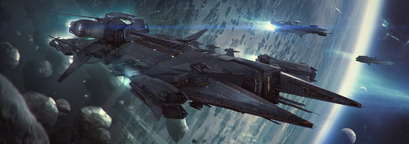
The Javelin Destroyer is a massive warship designed for intense combat situations. Armed with powerful weaponry and advanced systems, the Javelin is a force to be reckoned with on the battlefield.
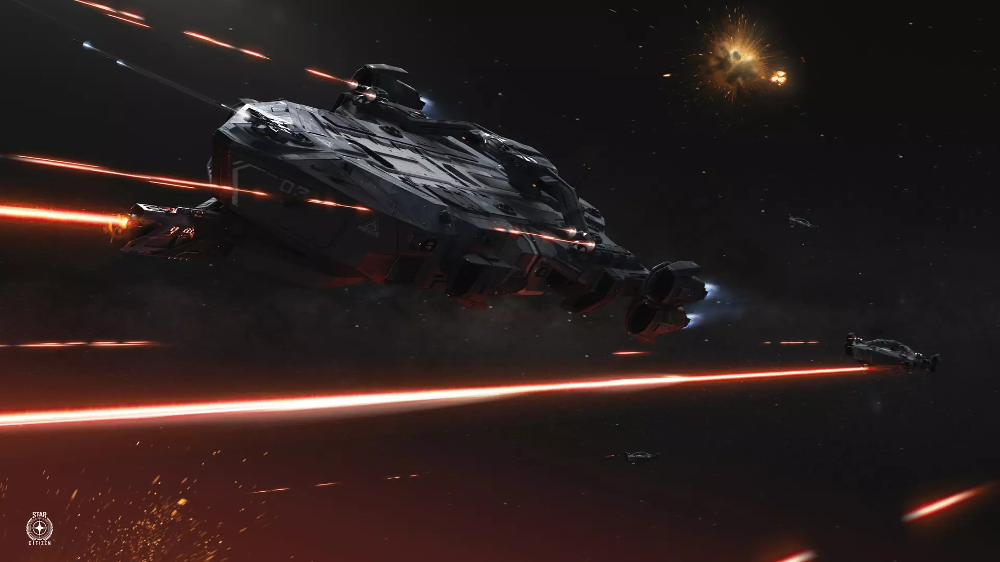
Increasing customer requests for deep space security services ecouraged TERRA BRIGADE command to purchase its first surplus Idris in 2801. Despite the financial burden of this acquisition the business growth exceeded all expectations and paved the way for future fleet expansions of its operations branch. The TBSC Wei-Yin Song was named after the famous lead surveyor of the UNEs eastern expansion program who discovered Terra, known as 342A.03M at the time. It operated prior its decommissioning under the designation UEES Callisto in the system of Centauri bordering the Vanduul systems Vendetta and Viking.
In 2795 it took part in the large scale preventive attack "Storm surge" on Vendetta and Viking led by the UEES Javelin class destroyer Akari. The successful fulfilment of the mission objectives which weakened the vanduul capabilities of an attack on the Centauri system for years to come and the extensive damage it took during the battle ultimately led to its decommisioning and disarmament. It spend the next six years till its disposal through the surplus act oft 2801 at a UEE reserve base on MacArthur in the Kilian system. After its purchase the reactivation and rearmament to IDRIS-K standards was finished in the same year. It has now served TERRA BRIGADE as carrier and flag ship for 151 years.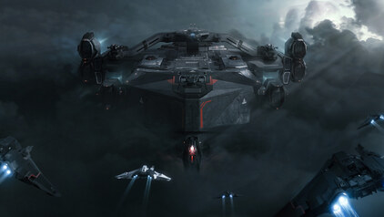
In mid 2587, the TEBRIG High Council has been called to an emergency meeting in REDACTED on Gen, with officials from the UEE Navy. The meeting was called to talk about the heightened amount of piracy in the system due to the discovery of a pocket of highly valuable asteroids in the marisol belt. Upon long consultations of which new areas TEBRIG would have to keep control over, the UEE Navy has agreed to lend the Idris called UEE Nightingale on one condition. If TEBRIG is successful in this mission they will be permitted to use it for further contracts with the UEE Navy.
Several successful years later, the UEE Navy has agreed to sell the UEE Nightingale to TEBRIG as it was well battle worn, and it would no longer serve its purpose in the UEE Navy. Upon finalising all the agreements, TEBRIG High Council decided to fully repair the Idris as well as making a few of its own modifications to it. Finally the UEE Nightingale was renamed to the TEBRIG Ankorum to mark a new beginning. With countless of battles won and none lost it is a ship of pride for the TEBRIG Navy, and is often referred to as the ship that has liberated Terra. It has since then been transformed into an Idris K variant to further enhance its battle effectiveness. The Ankorum is actively flown to this day by the famous Night Hawk squadron (formally the TEBRIG 2nd Elite Squadron)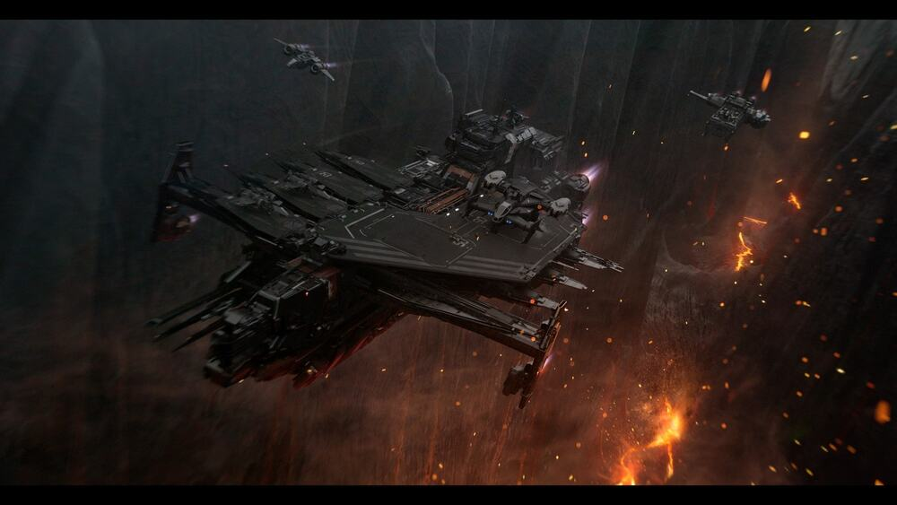
The TEBRIG Zhukov is a industrial carrier designed to transport fleets of ships to different systems. In 2846, TEBRIG High Council decided to expand the logistics branch due to the high market demand of small ship transport. The ship chosen for this role was the Drake Kraken which was competitively priced, it has a high carrying capacity, a large amount of cargo space and most importantly a fierce defensive armament.
The Zhukov is known for its battle with the Maroon Bandit Gang. One day, the TEBRIG Zhukov was on a routine mission to deliver tourist's ships and supplies to the Goss system. The crew had made the journey many times before and enjoyed going to Goss due to the natural beauty of the binary star system. But this time was different. As they entered the designated system, they were suddenly attacked by a group of rogue pirates who had been targeting carriers like the Zhukov. The Zhukov's crew sprang into action, firing the ship's powerful defence systems and launching its 2 dedicated gladius fighters, while manoeuvring to avoid the pirate's attacks. The battle was intense and lasted for several hours, but the skilled pilots, engineers and turret gunners aboard the Zhukov were able to drain the gang's resources and defeat their ships. The TEBRIG Zhukov and its valuable tourists and cargo untouched. The crew continued on their mission to deliver tourists and supplies to Goss. The TEBRIG Zhukov and its crew became widely known in the Goss system as these gangs have been terrorising many other carriers that travelled to the Goss system. The ship was seen as a symbol of hope and strength in the Goss System, inspiring others to stand up against pirate gangs. Years went by, and the TEBRIG Zhukov continued its primary mission, to deliver customers ship's and cargo to wherever they need it to be, facing down any threats that came its way. The ship and its crew remained a shining example of the power and courage that could be found in even a light industrial carrier.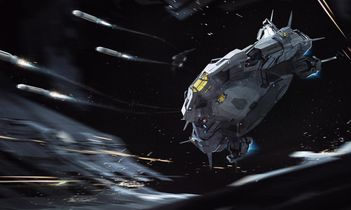
The polaris is fast and agile corvette, intending to hit its targets with a strong payload of torpedoes and flying away.
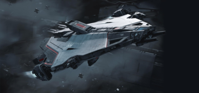
The Nautilus is a subcapital minelayer, intending on defending its target via setting up a bomb/turret perimeter.
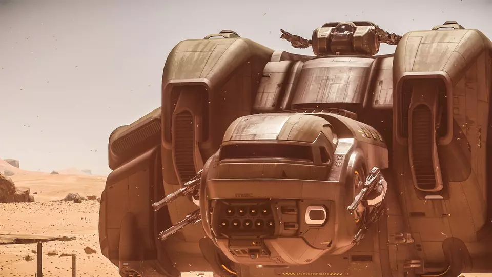
The militarized variant of the starfarer purchased in early 2800s for refueling under intense conditions.
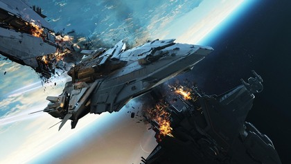
The perseus is a subcapital gunship intended to hit above its weight class while being able to take a beating with its heavy armor.
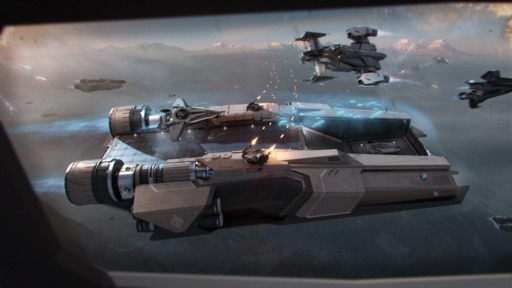
The liberator is a subcapital carrier, intended to be used as a dropship or a carrier to lighter operations.
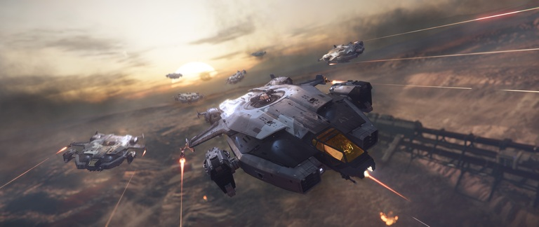
The Valkyrie a dedicated dropship, it is designed to safely deploy up to twenty armed troops along with a single vehicle into combat zones. Armed with multiple turrets and side guns, it can provide heavy overwatch to deployed troops, clearing a safe landing zone.
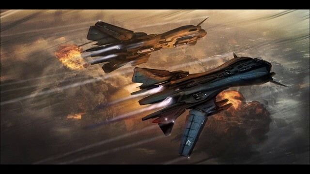
The Retaliator is a large heavy bomber designed to destroy its targets with a heavy torpedo payload while being a light gunship.
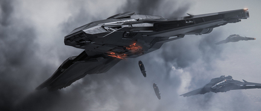
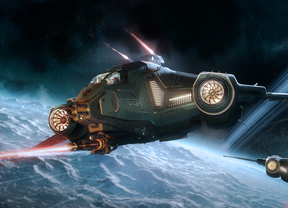
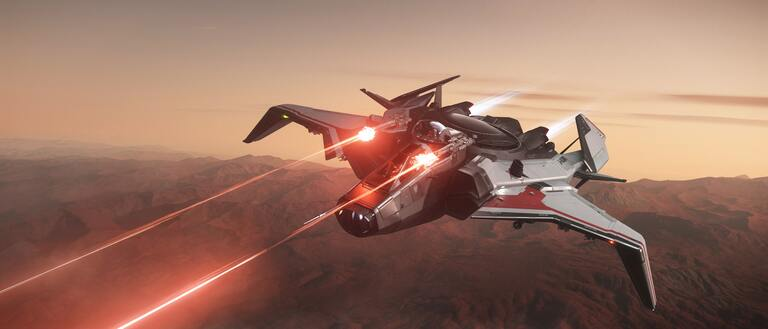
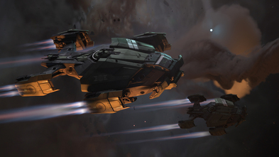
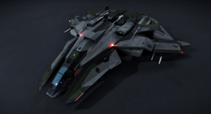
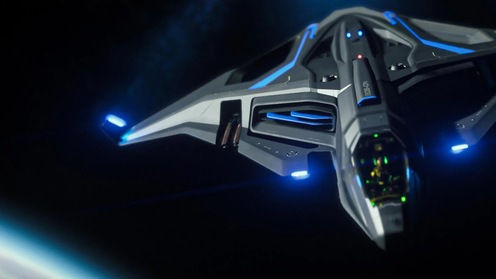